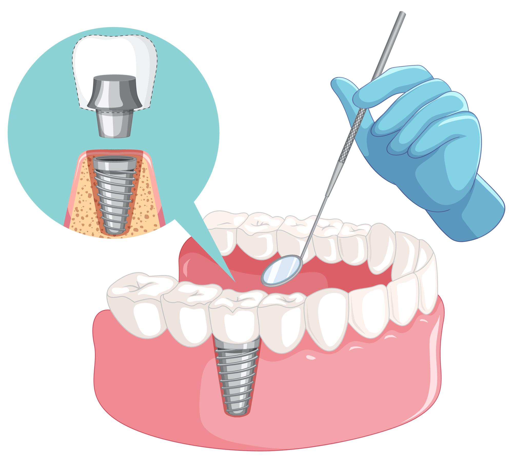
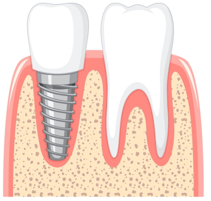
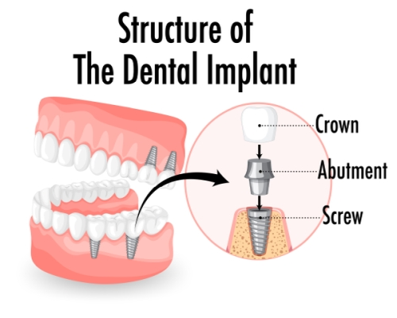

English
English
Dental Implant-Teeth Implants Turkey-Full Mouth Tooth Implant
What is a Dental Implant? Istanbul Dental Implant prices? Implant cost? Implant Treatment? All about the Implant!
Dental implant treatment eliminates the bad situation caused by missing teeth in terms of both health, function and appearance with the help of prostheses supported by implant teeth using artificial roots in people who do not have a tooth completely in their mouth or who are missing one or more teeth.
The tooth implant acts as strong as the main tooth. The implanted tooth can be used comfortably and safely in all periods of our lives by following the doctor's instructions about what should be done after the treatment with a regular and appropriate oral cleaning.
What is an Implant?
Implant is a screw-shaped application, which is produced from titanium, compatible with body tissues and largely durable, suitable for the latest technology, and placed in the jawbone with the aim of restoring our lost tooth or teeth as a function and a beautiful appearance. Restored tooth with implant tooth application imitates natural tooth root. With the dental implant application, it is aimed to gain the chewing function and ability of the tooth, as well as to fulfill the function of the tooth without encountering any problems throughout life.
We can have a healthy tooth with dental implant treatment for only one missing tooth without any operation on other healthy side teeth, as in the applications for all missing teeth in our mouth.
Dental implant treatment is an operation that will take about half an hour, under which the person to be treated is given local anesthesia. Since the outer area of the implanted tooth is subjected to special treatment, a special connection form is created for cellular and mechanical attachment to the jawbone. The optimal waiting period for this bond to occur is 3-6 months. In the researches, ideas have emerged that prosthesis can be applied without a waiting period. The best thing for the patient's health is to wait for the time.
Dental implant, also known as screw thread, is a type of dental treatment that is highly preferred by people and does not harm the jawbone and teeth.
Who is Dental Implant applied to?
For people who want to apply for implant treatment, “In which cases dental implant treatment is performed?” Questions such as “Who gets implant treatment” are questions that he wants to find answers to. These questions can be answered in the preliminary examination by the dentist. Because the dentist will be able to answer these questions by looking at the patient's age, chronic diseases, history and level of addiction, the type of treatment to be applied according to preference, the jaw structure and the latest condition of the gingiva. These determinations are important for implant construction. People who can be treated with dental implants are as follows:
- Those in good general health.
- Patients who have completed the growth process and have adequate bone structure.
- People whose lower age limit is between the ages of 16-18. There is no upper age limit in implant treatment.
- Those who do not have a health problem that will prevent their recovery after the treatment.
- Those whose jawbone width is suitable for treatment. (If there is not enough width in the bone in screw dental treatment, treatment can be done by increasing the amount of bone with a medical technique.)
- Those with diabetes whose sugar level is under control and regularly.
How is Dental Implant performed? Implant Treatment stages?

Implants, which are generally made of titanium and in the form of small screws imitating tooth roots, come in various sizes in accordance with the bone structure in the area to be applied. The treatment phase of the implant tooth is relatively long. Today, there are treatments called "immediate implant", which are given as an immediate implant and terminated in a single session. However, the preferred treatment takes a period of 3-6 months.
How the process will progress in implant treatment is determined during the first examination. During this examination, the patient who wants to have his lost teeth treated is evaluated by the physician. At first, the dentist asks the patient to have a very good oral cleaning, and if necessary, he or she may apply for improvement methods.
It is checked whether the patient's jaw bone tissue in the implanted area is suitable for treatment. The condition of the gums is examined. X-ray and especially tomography are a good helper in the evaluation phase because it also shows the bone thickness. While evaluating by the dentist; Considering the patient's systematic condition, is the patient suitable for implant application? In order for this treatment to be carried out, for example, the head and neck region should not have received radiotherapy, the patient should have completed bone development, and should not have uncontrolled diabetes and blood pressure. Patients undergoing cancer and osteoporosis treatment, in which some drugs that damage the bone structure are used, are not suitable for implant treatment. The drugs used by the patient who will be treated with dental implants should be shared with the dentist.
The patient's jawbone should be in a structure suitable for the screw tooth product in terms of width, height and quality. If the jawbone is not sufficient, the bone level can be increased by surgical intervention.
In the treatment, a planning should be made that will include the number of implanted teeth to be applied to the patient, how long the treatment will last, and the price of the implant. For example, if a single tooth implant or more than one implant will be made, everything can change in practice. Therefore, planning is important.
“How is an implant made?” In fact, the question of interest is the surgical part of the treatment. After the initial examination and evaluation by the dentist, if the implant treatment is deemed appropriate, surgical intervention can be started. A screwed tooth is inserted into the patient's jawbone by a dentist or maxillofacial surgeon. Surgical intervention is performed with local anesthesia. If there is no infection in the patient's mouth and the size of the jawbone is suitable for treatment, a dental implant can be applied immediately to replace the extracted tooth. In the operation, the flesh on the jawbone of the patient is opened, and a screwed tooth is placed into the prepared slot in the inner region of the jawbone. After this procedure, the gingiva is closed again. The process is completed in about 5-15 minutes per screw thread.
Except for the immediate implant application, which does not require waiting after the intervention, a certain period of time should be waited after the surgical intervention for the implants to connect and fuse in full harmony with the jawbone. Depending on the difference in techniques, the implant stays in the jawbone for approximately 2-6 months. This contributes to the success of the implant. Maximum attention should be paid to the hygiene of the area where the treatment will be performed.
When the time required for the jaw and implant to fuse has passed, the prosthesis, which has been experienced, measured and modeled before, is placed on the screw tooth application. After the implant tooth is placed in the jaw, extreme care should be taken in oral hygiene.
Will there be pain during Dental Implant Treatment?
Patients are very curious about whether pain is felt during the operation during the implant treatment. Do I even feel pain during dental implants? Or is screw dental treatment painful? questions have been the inevitable questions that puzzled us. Since the implant treatment is performed with local anesthesia, no pain and ache is felt. Since the nerve tissue in the human jawbone is less, there is no pain, so there is no concern for the application to be made.
There may be pain when the effect of the anesthesia given to the patient wears off. Since this pain, which is seen as a normal pain, will be predicted by your dentist, you will be prescribed a pain reliever. It is normal to see swelling and bruising in the operated part after the implanted tooth operation. If recommended by your dentist, the swelling can be reduced by placing an ice pack on the swollen area every 10 minutes. In addition, we should not consume hot food and drinks to avoid swelling.
What should be considered after Dental Implant Treatment?
- First of all, as in any treatment, your doctor's recommendations and instructions should be strictly followed.
- In order to prevent bleeding in the form of discharge after the treatment, the tampons placed in the patient's mouth should be kept for 30 minutes.
- Care should be taken not to spit, not to irritate the wound, not to activate the mouth muscles by talking for a long time in order not to increase the bleeding.
- After the treatment, smoking and alcohol use should be suspended until the wound heals completely. Smoking and alcohol adversely affect wound healing.
Frequently Asked Questions about Dental Implants Turkey
Many factors are effective on implant prices. While determining the implant prices, the experience and success of the dentist, the brand and quality of the implant to be used, the number of implants and the technique applied are important. We can list the factors that determine the screw thread price as follows:
- Dentist's experience, knowledge and success.
- Procedures that need to be done additionally before the treatment, such as raising the level of bone that has not yet developed adequately, by surgical intervention.
- The quality, features and brand of the implant to be used in the treatment.
- Number of implants to be applied to the patient.
- Features such as brand, quality, durability of prostheses and similar products to be applied on screwed teeth.
- Whether all materials including the implant to be used are domestic and/or imported. The fluctuation in exchange rates has made domestic implant prices more attractive.
- Preferred cash or installment payment methods.
Of course, current dental implant prices can be learned in the most accurate way by contacting the dentist who will perform the treatment. How long does a Dental Implant last? The better you take care of the implant tooth area after the treatment, the longer your life will be. The implant used in line with the recommendations of your dentist functions successfully throughout the life of the tooth. However, depending on other factors, the life of the dental implant is 20-30 years on average.
If there is no cyst, swelling, infection or bleeding in the area to be treated, the dental screw can be applied immediately after tooth extraction. In cases such as cysts, swelling, infection, bleeding, dental implant treatment can only be performed after these are healed. If tooth extraction has taken place long ago, implant treatment can be applied immediately after the evaluation by the dentist.
Since smoking and alcohol use after dental implant operation will increase the risk of infection, healing will be prolonged and lead to unsuccessful results. This increases the risk of dental implants not being integrated. It is recommended that patients not smoke after dental implant surgery, at least until the wounds have healed.
Full Mouth Dental Implant Turkey-What is Full Jaw Implant? How much are Implant Tooth costs-Istanbul?
What is Implant?
Implant is a kind of fixed prosthesis that is placed in place of natural teeth in cases where tooth loss occurs due to different reasons, and restores the aesthetic appearance and needed functionality to the patient. If there is sufficient bone volume in the lower and upper jaws, the screwed tooth obtained from titanium material is placed in the jawbone. The prosthetic tooth is fixed on the artificial and solid tooth root obtained. After the procedure, the problems experienced by the patient, due to the deficiency or structure of the teeth, and aesthetic problems and chewing function problems are solved. The patient regains his health in a short time.Implant dental treatment is applied as an alternative treatment method to bridge and denture treatments used in edentulous cases..
What is Full Mouth Dental Implant Treatment?
Full mouth dental implant treatment is a treatment method applied in cases where all the teeth in the jaw have been lost. In such cases, All On Four, All On Six or full mouth implant treatments can be applied. After the examination, the specialist dentist will recommend the implant treatment suitable for the patient's condition. Thanks to the full mouth implant treatment, the patient can apply the pressure force required for chewing function with the implants placed in the lower and upper jaw.
After the dental implant procedure, fixed or mobile prostheses and bridges are placed in the jaw. If the All On Four procedure, which is one of the ideal and successful implant techniques, is performed, bridges are placed on a total of four implants, two on the lower jaw and two on the upper jaw. Implants are not made to the posterior teeth group, namely the chewing teeth. Therefore, there must be a sufficient number of implants in the jaw to achieve adequate and comfortable chewing function. As the number of implants applied increases, the life of the placed bridges is also longer.
Thanks to the whole mouth dental implant treatment, the patient gets rid of the problems caused by tooth loss. Threads do not wobble as screw threads made of titanium material and bridges placed are fixed to each other. For this reason, there are no problems such as moving or dislodged while speaking, which occur in dentures. Whole mouth dental implant; It offers the patient ideal comfort and confidence while eating, talking and smiling.
How is the Full Mouth Implant prosthesis made in Istanbul?
At the beginning of the treatment, the bone quality, width and height of the lower and upper jaws are checked by the specialist dentist with medical imaging methods.
- The number of implants to be used in whole mouth dental implant treatment and the areas where they will be placed are decided.
- The patient's measurements are taken and rehearsals are started.
- Local anesthesia is used so that the patient does not feel pain during the procedures to be performed.
- Roots of previously extracted teeth and cysts, if any, are cleaned.
- After the examination, the number of implants determined by the specialist dentist as appropriate for the patient is placed in the jaw.
- It takes a while for the placed implants to fuse with the jawbone and for the treatment area to heal.
- After the healing process, the patient is fitted with permanent dentures. In full mouth implant treatment, prosthesis placement can be applied in two different ways;
- At least 6 to 8 implants are placed in the jaw. The prosthetic teeth prepared for the patient are fixed on the placed implants by gluing. In this way, the patient can use the dentures without removing them
- At least 6 to 8 implants are placed in the jaw. Removable dentures are placed on the implants. These prostheses are not fixed by sticking, the patient can remove the prosthesis whenever he wishes. Since the dentures can be removed, cleaning is easier.
What are the advantages of Full Mouth Dental Implant application?
- Complete dental prostheses can be used in cases of complete tooth loss. However, these prostheses are insufficient in terms of functionality and can tire the patient psychologically. Whole mouth dental implant is a more successful treatment method in this regard.
- With the full chin implant, the patient has natural and white teeth that are as strong as before.
- Patient with full mouth dental implant; reaches the old quality of life, is aesthetically comfortable, regains chewing functions and smiles with self-confidence.
- The dental implant process, which is performed by expert dentists in a clinical environment and with quality materials, is long-lasting.
- Since the material used in the treatment of all oral dental implants is titanium, it is compatible with the body and does not cause allergic reactions in the patient. Therefore, it is a comfortable and highly successful treatment method recommended in edentulous cases
- Dentures (total dentures) can cause problems such as difficulty in speaking, playing during sneezing, inability to chew comfortably while eating. These problems are not encountered after full chin implant treatment
- The dental implant procedure prevents the melting of the lower and upper jaw bones and preserves the volume of the bone.
- Whole mouth dental implant; It increases self-confidence by enabling the patient to smile and speak with natural, straight, white teeth.
Who is suitable for Full Mouth Implant Prosthesis Treatment?
Whole mouth dental implant; It is a procedure that can be performed by adult patients who have lost all their teeth for different reasons, have difficulty in speaking and chewing, and have aesthetic complaints. Patients who will have this application;
- Having sufficient bone volume in the lower and upper jaws,
- Appropriate oral hygiene and gum health,
- Availability of jaw structure and width,
- The patient has completed bone growth and development,
- Not having received radiotherapy treatment from the head and neck region,
- Not having weak immunity and not experiencing related health problems,
- Absence of health problems such as heart disease, blood pressure, sugar,
- Not using blood thinners close to the treatment must.
What should be considered after Full Mouth Dental Implant application?
- Patients who have implants should pay attention to their daily oral and dental care.
- All those who have oral dental implants should avoid alcohol and cigarette consumption. Smoking threatens oral and dental health by triggering the formation of bacteria that cause bone damage. It also prolongs the post-procedure healing process, so smoking should be avoided for at least a few weeks after the procedure.
- Soft food diet should be applied. Hard-shelled foods and sticky candies should be avoided.
- You should not lie down for 2 hours after the implant procedure.
- Ice therapy should be applied in cases of pain and swelling.
- Antibiotic drugs, if available on prescription, should be taken on time.
- Hot-cold drinks and foods should not be consumed during the week after the procedure.
- The recommendations of the specialist dentist should be followed, periodic controls should not be interrupted.
Frequently asked questions about Full Mouth Implant in Istanbul
During the implant treatment, the patient is given local anesthesia, so the patient does not feel any pain during the procedure. It is normal for patients to feel pain when the anesthesia wears off after the procedure. It is possible to prevent these pains with the drugs recommended by the specialist dentist. Ice therapy can be applied in cases of pain and swelling.
Patients who have a full mouth dental implant can use a full jaw implant for up to 25-30 years if they have sufficient bone volume in the lower and upper jaws, if the jaw structure is appropriate, if they take care of their mouth and teeth and follow their periodic examinations.
In edentulous cases, implants can be made for each lost tooth. However, when this method is applied, the bone volume between the teeth will be insufficient, so the life of the implant may be shortened and it may harm the health of the jaw. Therefore, implants are placed in the jawbone by leaving 3-5 mm gaps in general, and they do not harm the bone tissue and oral health of patients who have lost all their teeth.